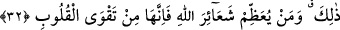

“Allah’ın, kulları üzerindeki hakkı, onların sadece Allah’a kulluk etmeleri ve hiçbir
şeyi O’na ortak tutmamalarıdır. Ey Muâz, bunları yaptıkları takdirde kulların Allah
üzerindeki hakkı nedir bilir misin?” buyurdu. Ben de: “Allah ve Rasûlü daha iyi bilir.”
dedim. Bunun üzerine “Onlara azâb etmemesidir.” buyurdu.[29]
Şu halde kulun haniflik milleti/dîni üzere olması için ibâdeti Allah’a tahsis etmesi ve
şirk şâibesinden kurtulması gerekir. Bu millet ise Âdem (a.s.)’dan bugüne kadar birdir.
O da tevhid ve yakîne bağlılıktır.
Rasûlullah (s.a.)’e: “Hangi amel daha fazîletlidir?” diye soruldu. “Allah ve Rasûlü’ne
îman.” buyurdu. “Sonra hangisidir?” diye soruldu. “Allah yolunda cihad.” buyurdu.
“Sonra hangisidir?” diye soruldu. “Allah katında makbul olan hacdır.” buyurdu.[30]
Bir hadîste şöyle buyrulmuştur: “Sizin için en çok korktuğum şey, küçük şirktir.”
Ashab (r.anhüm): “Küçük şirk nedir, yâ Rasûlallah?” diye sordular. Rasûlullah (s.a.):
“Riyâdır.” buyurdu.[31]
Mürâî, herkesi mâbûd edinir
Bu yüzden mürâîye müşrik denilir
Hâfız der ki:
Sanki kıyâmet gününe inanmazlar da
Allah’ın işinde bu hîlelerde, bu düzenlerde bulunurlar
Şirk, kötülüklerin en çirkinidir. Tevhid de iyiliklerin en güzelidir. Bir hadiste şöyle
buyrulmuştur: “Bir kötülük yaptığında, onun yanında hemen bir iyilik işle. Çünkü
iyiliğin karşılığı on katı verilir.” Efendimiz’in muhâtabı: “Yâ Rasûlallah, Lâ ilâhe
illallah sözü hasenâttan (iyiliklerden) midir?” diye sordu. O da: “Hem de hasenelerin
(iyiliklerin) en güzelidir.” buyurdu.[32]
32. Durum öyledir. Her kim Allah’ın hükümlerine saygı gösterirse, şüphesiz bu,
kalblerin takvâsındandır.
“Durum öyledir.” Zikredilen Allah’ın emir ve yasaklarına saygı göstermenin daha
hayırlı olması, Allah’a ortak koşmaktan ve yalan söylemekten uzak durmanın lüzumlu
bir iş olduğu hususunda durum böyledir. Ya da bu hususlara uyun, demektir.
“Her kim Allah’ın hükümlerine saygı gösterirse, şüphesiz bu, kalblerin
takvâsındandır.” Şüphesiz onlara hürmet, kalblerin takvâsından neş’et eder. Takvânın
özel olarak kalblere tahsisi, onların takvânın merkezi olması sebebiyledir. Takvâ orada
sebat bulur ve yerleşirse, onun tesiri diğer âzâlarda da görünür.